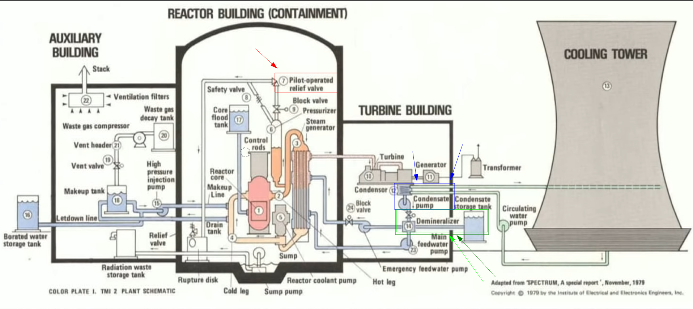

Alerting Is
Hard:
Anatomy Of A
Good
Alert
Steve Ovens
Red Hat Architect
Mar 2023
* we are going to talk about 4 things that alerts should be
* we are going to walk through how humans react to stress
* we are also going to talk about how the industry responds to adverse events
* we are going to talk about considerations before creating an alert
* finally we are going to cover what goes in the body of the alert
* we are going to walk through how humans react to stress
* we are also going to talk about how the industry responds to adverse events
* we are going to talk about considerations before creating an alert
* finally we are going to cover what goes in the body of the alert
* Alerting is hard.
* everyone thinks they can do alerting
* that they have a solid basis
* usually a company probably has a ton of alerts... no value
* In order to be truly successful, alerts need to have a few traits. USERS
Judgment
Urgent
Actionable
Necessary
* everyone thinks they can do alerting
* that they have a solid basis
* usually a company probably has a ton of alerts... no value
* In order to be truly successful, alerts need to have a few traits. USERS
Judgment
Urgent
Actionable
Necessary
Actionalble Alerts!
* First, they need to be actionable.
* If there is nothing you can do about it, why alert on it at all.
* presumably there is some action you expect the on-call representative to take.
* If you don't have a clear idea of what you would like to happen how can anyone else?
* If there is nothing you can do about it, why alert on it at all.
* presumably there is some action you expect the on-call representative to take.
* If you don't have a clear idea of what you would like to happen how can anyone else?
Clearly Defined Alerts!
* alerts need to be clearly defined and understood.
* alerts need to be easy to interpret.
* A lot of times there is some critical portion of information missing.
* If an outside observer has questions then chances are your on-call folks will as well
* alerts need to be easy to interpret.
* A lot of times there is some critical portion of information missing.
* If an outside observer has questions then chances are your on-call folks will as well
Relevant Alerts!
* alerts need to be relevant to the workload you are running.
* Gone are the days where we wantonly create CPU, memory, disk, network or other alerts.
* the old approach leads to being swamped with too many alerts that may even be red herrings.
* Gone are the days where we wantonly create CPU, memory, disk, network or other alerts.
* the old approach leads to being swamped with too many alerts that may even be red herrings.
Focused On User Experience!
* most importantly, alerts need to be focused on the end-user's experience.
* don't just take readings from inside your network, or inside the cluster.
* A user has no care for, whether your CPU is running at 80% or 5%.
* (In fact you might argue that if you aren't running in the upper 70s, you are under utilizing your hardware and throwing money away).
* can I get my task accomplished?
* If I don't see any degradation in service, the alert should not fire. * How do you turn these ideas into something tangible?
* don't just take readings from inside your network, or inside the cluster.
* A user has no care for, whether your CPU is running at 80% or 5%.
* (In fact you might argue that if you aren't running in the upper 70s, you are under utilizing your hardware and throwing money away).
* can I get my task accomplished?
* If I don't see any degradation in service, the alert should not fire. * How do you turn these ideas into something tangible?
The Problem: Too much to track
* Let's start by defining what the problem is.
* the problem is that there are so many things to track... alert fatigue is a real problem
* the problem is that there are so many things to track... alert fatigue is a real problem
Impacts Of Stress...
* Alerting and monitoring everything will lead to burn out, missed alerts, mistakes during troubleshooting and so on.
* There is a real cost to asking people to care about everything.
* Every alert triggers a stress response.
* The stress "budget" that humans have is finite.
* There is a real cost to asking people to care about everything.
* Every alert triggers a stress response.
* The stress "budget" that humans have is finite.
They Ignore Things...
* we know that people will start alleviating their own stress
* They will be selective about what they respond to
* They will be selective about what they respond to
They Slow Down...
* A natural response to sress is to slow down
They Push Off Work...
* Thirdly, we know that a common coping mechanism is to punt the work towards another group
* They may respond to an alert and say "well this is a networking issue"
* This may or may not be correct
* the first steps taken to accurately diagnose the issue greatly impact the time to recovery.
* They may respond to an alert and say "well this is a networking issue"
* This may or may not be correct
* the first steps taken to accurately diagnose the issue greatly impact the time to recovery.
They Quit...
* your staff will absolutely move on
* This leaves a whole in the rotation
* a hefty training bill to get someone new up to speed
* No one wants to exist in an environment where they feel the only option for relief is to quit.
this is the last slide about reaction by people... next how the industry responds
* This leaves a whole in the rotation
* a hefty training bill to get someone new up to speed
* No one wants to exist in an environment where they feel the only option for relief is to quit.
this is the last slide about reaction by people... next how the industry responds
* the industry is still relying on old-school methods
* most operations departments believe that monitoring everything means they don't really have to know how the system works.
* They would of course disagree with that statement
* yet they often inherently rely on an operator's experience and knowledge of an environment to guide and save them in the event of a crisis.
* most operations departments believe that monitoring everything means they don't really have to know how the system works.
* They would of course disagree with that statement
* yet they often inherently rely on an operator's experience and knowledge of an environment to guide and save them in the event of a crisis.
* we're going to chat about 3 mile island
* This plant worked like this:
* nuclear material is put in close proximity of each other in order to generate heat
* water, when applied to the heat generates steam
* this steam powers a turbine that generates power
* The steam sent to a stack for cooling
* it gets condensed and put back into the loop
* This plant worked like this:
* nuclear material is put in close proximity of each other in order to generate heat
* water, when applied to the heat generates steam
* this steam powers a turbine that generates power
* The steam sent to a stack for cooling
* it gets condensed and put back into the loop

* there was maintenance occurring on the demineralizer
* during the maintenance they caused a problem in the condensate pump... and it failed
* there were 3 auxillary pumps... all down for maintenance
* this caused the main feedwater pump to cut out
* the emergency systems kicked in as they should, opening the relief valve
* the automated systems sent the signal to close the valve... but it was stuck
* key: the automation reported that it sent the signal, not that it confirmed the valve closed
* during the maintenance they caused a problem in the condensate pump... and it failed
* there were 3 auxillary pumps... all down for maintenance
* this caused the main feedwater pump to cut out
* the emergency systems kicked in as they should, opening the relief valve
* the automated systems sent the signal to close the valve... but it was stuck
* key: the automation reported that it sent the signal, not that it confirmed the valve closed
* the emergency pumps activated
* burried in this control panel was the indication that no water was entering the system
* There was emergency cooling, but it was turned off to prevent flooding (b/c they thought they had water from the backup pump)...
* this combine with the valve being stuck open lead to loss of cooling
* there were so many alerts firing that critical ones were missed
* moral: they alerted on absolutely everything and because of that, it was too hard to find the important alerts
* burried in this control panel was the indication that no water was entering the system
* There was emergency cooling, but it was turned off to prevent flooding (b/c they thought they had water from the backup pump)...
* this combine with the valve being stuck open lead to loss of cooling
* there were so many alerts firing that critical ones were missed
* moral: they alerted on absolutely everything and because of that, it was too hard to find the important alerts
Before You Adjust Your Alerts...
(there is nothing further on this slide, its just the title)
* Many orgs lose sight of why they have alerts
* the surface answer is to highlight problems
* this will lead to alert creep like 3 mile island
* the surface answer is to highlight problems
* this will lead to alert creep like 3 mile island
User Facing Problems...
* You need to know when your users have a problem
* You need to establish user-based SLOs
* You need to establish user-based SLOs
* SLOs need to be tied to an error budget
* You want to trigger an alert before you breach your error budget
* You need to track burn rate
* You want to trigger an alert before you breach your error budget
* You need to track burn rate
Things To Think About...
This is a title/filler page to signal a transition
1. Types Of Alerts
* blackbox are happening right now... traditional alerts
* whitebox are predictive... burn rate, low/high water marks etc
* mature orgs have significantly more white box
* these alerts are more complex
* instead of putting effort, orgs will swamp their systems and people with traditional black box alerts
* whitebox are predictive... burn rate, low/high water marks etc
* mature orgs have significantly more white box
* these alerts are more complex
* instead of putting effort, orgs will swamp their systems and people with traditional black box alerts
2. Human Costs
- Alerts trigger context switching
- We have finite 'emergency' response times
- People Will Stop Caring
- You should limit pageable events to 1-2 per 12 hours (maximum!)
* context switching
* finite emergency response
* stop caring
* limit events to 1-2/12 hrs
* finite emergency response
* stop caring
* limit events to 1-2/12 hrs
3a. Infra Considerations
* What's the key hardware
* Do we need to care about network?
* Do we need to care about storage?
* Do we need to care about the vm infrastructure and layout?
* Do we need to care about network?
* Do we need to care about storage?
* Do we need to care about the vm infrastructure and layout?
3b. Critical App Considerations
* do we have current performance profiles
* Are we tracking performance deltas?
* Do we have queues or caches?
* How is the api responding?
* Are we tracking performance deltas?
* Do we have queues or caches?
* How is the api responding?
3c. End User Impact
* what impacts our users the most
* are user experiences correlated to actual real end user metrics
* can we validate this from multiple points of measurement
* What expectations do users have of your service
* are user experiences correlated to actual real end user metrics
* can we validate this from multiple points of measurement
* What expectations do users have of your service
3d. Business Impact

* tie transactions to business outcomes
* how do these outcomes correspond to performance?
* what metrics are used to represent those outcomes?
* Businesses don't care about how many 9s, they care about meeting their goals
* how do these outcomes correspond to performance?
* what metrics are used to represent those outcomes?
* Businesses don't care about how many 9s, they care about meeting their goals
4. Focus On Patterns Not Metrics
* you can elminate a lot of black box alerts by focusing on trends
* trends allow for some level of prediction
* multiple trends are ideal for dependency alerts
* trends allow for some level of prediction
* multiple trends are ideal for dependency alerts
5. Where To Send Alerts
* think about splitting alerts into different channels
* be intentional about how people see information
* ensure that alerts do not end up in multiple channels
* be intentional about how people see information
* ensure that alerts do not end up in multiple channels
SLO Alerting
The Way It Was...
* We used to track things in uptime
* this was a source of pride
* All we did was move the focus from uptime to the number of 9s in our availability
* there is no inherent value in a system running if the business isn't succeeding
* this was a source of pride
* All we did was move the focus from uptime to the number of 9s in our availability
* there is no inherent value in a system running if the business isn't succeeding
Business Value & Downtime...
* Create alerts based on business value
* we need to be aware of the possibility of downtime
* don't make so many alerts you get investigation paralysis
* the less confident you are, the more alerts you will hoard
* start small, really ensure you have gotten it right, then expand
* we need to be aware of the possibility of downtime
* don't make so many alerts you get investigation paralysis
* the less confident you are, the more alerts you will hoard
* start small, really ensure you have gotten it right, then expand
Tracking Upstream...
* SLOs should be picked based on helping you understand impact to users
* as part of that you need to track upstream
* If you base your product or service on a cloud offering you still need to track their status
* you can't do anything to resolve their issues
* you need to know whether it was your failure, or the upstream and you still need to be able to report the proper cause of the service interruption
* as part of that you need to track upstream
* If you base your product or service on a cloud offering you still need to track their status
* you can't do anything to resolve their issues
* you need to know whether it was your failure, or the upstream and you still need to be able to report the proper cause of the service interruption
What Makes Up A Good Alert?
Make Them Actionable...

* i've mentioned it earlier...
* If you are creating an alert, the implication is that someone needs to take some action
* without clear action, an alert ends up as an investigation
* this can be a big waste of time and energy
* useless alerts will cause your responses to alerts suffer across the board
* If you are creating an alert, the implication is that someone needs to take some action
* without clear action, an alert ends up as an investigation
* this can be a big waste of time and energy
* useless alerts will cause your responses to alerts suffer across the board
Alert Based On Deviations...
* does it really matter if your cpu hits 75%?
* is it a spike?
* is the spike outside of the normal operations of your service?
* The only way to know is to track the std deviations over time
* Std deviations tell you whether a dip or surge in a service is significant
* You need to decide how many std deviations above normal you will alert on
* You likely want 3 or more std deviations, but its highly dependent on your environment
* Use historical data to determine acceptable std deviations
* is it a spike?
* is the spike outside of the normal operations of your service?
* The only way to know is to track the std deviations over time
* Std deviations tell you whether a dip or surge in a service is significant
* You need to decide how many std deviations above normal you will alert on
* You likely want 3 or more std deviations, but its highly dependent on your environment
* Use historical data to determine acceptable std deviations
Remove Unneeded Alerts...
* if an alert recurring and not breaking anything, remove it
* Once you start working with advanced alerting, inferior alerts will manifest
* remove ask quickly as possible
* Once you start working with advanced alerting, inferior alerts will manifest
* remove ask quickly as possible
Remove Low Priority Alerts...
* similar to unneeded alerts, low priority alerts should be pruned
* You may want to create backlog items in a sprint based on low priority items
* they should not draw people's attention beyond creating backlog tickets
* You may want to create backlog items in a sprint based on low priority items
* they should not draw people's attention beyond creating backlog tickets
Alert From User's Perspective
* Alerting from within the software stack is only so useful.
* things should be measured from outside of the stack so that as much of the user's journey as possible is captured
* Even if your 'user' is a downstream application, they probably do not live on the same host
* you need to be able to cross reference what the users report with what the systems are reporting
* things should be measured from outside of the stack so that as much of the user's journey as possible is captured
* Even if your 'user' is a downstream application, they probably do not live on the same host
* you need to be able to cross reference what the users report with what the systems are reporting
Alert With Dependency Triggers
* this is sometimes called grouping
* given enough experience, start creating alerts based on a series of triggers
* Instead of a series CPU, memory and disk I/O alerts on an API server, you could most likely group these together
* fire off an alert of impending API errors or slow downs based on past experiences
* using indepth knowledge of your service combine with previous experience will allow you to craft more meaningful alerts
* given enough experience, start creating alerts based on a series of triggers
* Instead of a series CPU, memory and disk I/O alerts on an API server, you could most likely group these together
* fire off an alert of impending API errors or slow downs based on past experiences
* using indepth knowledge of your service combine with previous experience will allow you to craft more meaningful alerts
Google's JUAN Approach
- Judgment - requires thinking regarding how to solve it
- Urgent - consequences are imminent
- Actionable - You need to be able to do something
- Necessary - The alert needs to impact users
* if using autoscaling, you should not alert on cpu and memory thresholds (see std deviations for caveats)
* still need cliff alerts before you run completely out of capacity
* Cliff alerts should be very rare
* still need cliff alerts before you run completely out of capacity
* Cliff alerts should be very rare
Contents Of An Alert
Description and Summary
* both description and summary should be included in alert
* description details the situation and potential impacts
* May even provide info about what impact it had in the past
* descriptions have enough info to understand what the problem is, the possible ramifications of the problem and potential avenues of investigation.
* Summaries are short and sweet, two sentences max. Meant for experienced team members to know what's going on at a glance
* description details the situation and potential impacts
* May even provide info about what impact it had in the past
* descriptions have enough info to understand what the problem is, the possible ramifications of the problem and potential avenues of investigation.
* Summaries are short and sweet, two sentences max. Meant for experienced team members to know what's going on at a glance
Project & Environment
- You need to know which environment at a glance
- Ideally, project is clearly identified
- Including both saves a lot of time
- Very useful for new team members
(there are 4 bullets on this slide)
* ID the environment
* ID Project
* Often one or both of this information is missing from an alert
* having both pieces saves fumbling around looking for the info
* Its very helpful to people not very familiar with the product or service
* ID Project
* Often one or both of this information is missing from an alert
* having both pieces saves fumbling around looking for the info
* Its very helpful to people not very familiar with the product or service
What Metric Triggered Alert
* sticking with the ETCD example from earlier...
* assume you created an alert that used PING, OC GET PODS and ETCD ENDPOINT HEALTH
* you need to clearly state this in the alert
* if a check is ambiguous, you need to explain what the metric means
* assume you created an alert that used PING, OC GET PODS and ETCD ENDPOINT HEALTH
* you need to clearly state this in the alert
* if a check is ambiguous, you need to explain what the metric means
Conditions & Thresholds
* The current condition of the service needs to be clearly outlined
* thresholds should also be included
* that way you know how severe the current condition is relative to the trigger
* the threshold should be written in plain language so there is no guess work involved in understanding the alert
* thresholds should also be included
* that way you know how severe the current condition is relative to the trigger
* the threshold should be written in plain language so there is no guess work involved in understanding the alert
Doc & Runbook Links
* Make the initial responders's life easier by including documentation relevant to the alert
* at a minimum you should have basic instruction how to troubleshoot
* this section of the alert is updated semi-frequently to include the last 2 or 3 incidences where this alert (and associated resolutions) have been documented.
* past incident reports are not always needed, but it sure saves time when you do...
* at a minimum you should have basic instruction how to troubleshoot
* this section of the alert is updated semi-frequently to include the last 2 or 3 incidences where this alert (and associated resolutions) have been documented.
* past incident reports are not always needed, but it sure saves time when you do...
Escalations, SMEs & Timelines
* often neglected but incredibly useful when fighting fires, is noting both an escalation path as well as any SMEs
* not every event will warrant calling an SME
* this section is incredibly useful, especially for those non-technical users who are attempting to help coordinate a response
* It could be a link to a living document where the document is updated
* It could also be that the alert itself is generated by a template
* it is also possible to statically set this information (most commonly done in the form of a pager number, email, chat group etc)
* If you have an escalation path available to your on-call staff, you should set a time-box for working on an issue
* Good: unified response plan provided to management
* Good: everyone understands who gets called and when
* Good: resources understand they are not alone dealing with a problem
* These need to be customized based on the severity of the alert
* not every event will warrant calling an SME
* this section is incredibly useful, especially for those non-technical users who are attempting to help coordinate a response
* It could be a link to a living document where the document is updated
* It could also be that the alert itself is generated by a template
* it is also possible to statically set this information (most commonly done in the form of a pager number, email, chat group etc)
* If you have an escalation path available to your on-call staff, you should set a time-box for working on an issue
* Good: unified response plan provided to management
* Good: everyone understands who gets called and when
* Good: resources understand they are not alone dealing with a problem
* These need to be customized based on the severity of the alert
Next Steps
* There may be specific next steps that are required from a process perspective
* such as acknowledging the alert, filing some paperwork, starting timers, sending out communications etc
* While not always necessary, it is a good habit to get into.
* such as acknowledging the alert, filing some paperwork, starting timers, sending out communications etc
* While not always necessary, it is a good habit to get into.
* Focus on the user
* work towards alerting on deviations
* tie alerts to SLOs which have business value
* review the contents of alerts often
* don't hoard alerts!
* work towards alerting on deviations
* tie alerts to SLOs which have business value
* review the contents of alerts often
* don't hoard alerts!